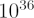
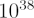
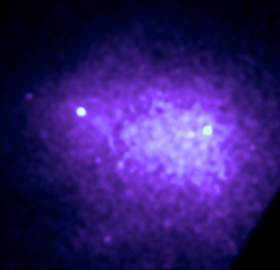
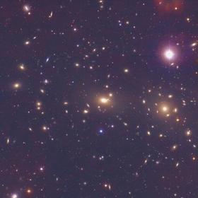

Bremsstrahlung radiation is the radiation given off by a charged particle (most often an electron) due to its acceleration caused by an electric field of another charged particle (most often a proton or an atomic nucleus). The word “Bremsstrahlung” is a German word meaning “braking radiation,” which refers to the way in which electrons are “braked” when they hit a metal target. The incident electrons are free, meaning they’re not bound to an atom or ion, both before and after the braking. Consequently, this kind of radiation’s spectrum is continuous (unlike atomic spectra, which contain sharp spectral lines) and sometimes referred to as “free-free” radiation. If the energy of the incident electrons is high enough, they emit X-rays after they have been braked.
One of the most interesting examples of Bremsstrahlung radiation in the universe is that coming from the hot intracluster gas of galaxy clusters. In this case, the electrons don’t bounce off a metal target but are deflected by the electric field of protons. The gas has X-ray luminosities of

to
W (roughly 10 billion to 1 trillion times the luminosity of the sun!) and temperatures on the order of 10 million K. X-ray telescopes can detect this radiation as diffuse light, as seen in the image of the Coma cluster (below left).

Credit: NASA/CXC/SAO/A.Vikhlinin et al.

Credit: Omar Lopez-Cruz & Ian Shelton/NOAO/AURA/NSF